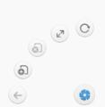

有用手写demo
Jquery手写放大镜查看demo:
;$(function(){
var minOLi = $(".wrapSmallImg ul li");//小图li
var minOWidth = $(".wrapSmallImg ul li").outerWidth(true);//小图li的宽度
var minOSize = $(".wrapSmallImg ul li").size();
var minOul = $(".wrapSmallImg ul"); //小图ul
var maxImg = $(".zoomMiddle img");//中图img
var oBtnLeft = $(".zoomSmall .left");//左边按钮
var oBtnRight = $(".zoomSmall .right");//右边按钮
var now = 0;//计算器
var oZoomDiv = $(".zoomMiddle");//遮罩的移动层
//鼠标移动上去换图和换src的值
minOLi.mouseover(function(){
$(this).addClass("current").siblings("li").removeClass("current");
var thisSrc = $(this).find("img").attr("src");
maxImg.attr("src",thisSrc);
$(".zoomLarge img").attr("src",thisSrc);
})
//按钮点击的时候有滚动
oBtnLeft.click(function(){//left 左边
if (now>0) {
now--;
minOul.animate({
"left":'+='+minOWidth
},500)
}
})
oBtnRight.click(function(){//Right 右边
if (now>=0 && now< (minOSize-6)) {
now++;
minOul.animate({
"left":'-='+minOWidth
},500)
}
})
//鼠标移入的时候
oZoomDiv.mousemove(function(e){
$(".mask").show();
$(".zoomLarge").show();
//获得鼠标当前的位置
var oZoomDivOffset = oZoomDiv.offset();//文档偏移量
var x = e.pageX - oZoomDivOffset.left - $(".mask").width()/2; //$(".mask").width()/2减去了这个就是保持鼠标一直在div中间x点的位置
var y = e.pageY - oZoomDivOffset.top - $(".mask").height()/2; //和上面一样保持Y轴的位置
console.log(x,+'......'+y)
if (x<=0) {
x=0
}else if(x>= oZoomDiv.width()- $(".mask").width()){
x= oZoomDiv.width()- $(".mask").width();
}
if(y<=0){
y=0
}else if(y>=oZoomDiv.height()- $(".mask").height())
{
y = oZoomDiv.height() - $(".mask").height()
}
//定义比例尺 0-1
var oScale_X = x/(oZoomDiv.width() - $(".mask").width());
var oScale_y = y/(oZoomDiv.height() - $(".mask").height());
console.log(oScale_X+'........'+oScale_y)
//改变放大镜区域的坐标
$(".zoomLarge img").css({
left:-oScale_X*(600-$('.zoomLarge').width()), //这里的600是放大镜里面图片的宽度 ,
top :-oScale_y*(600-$('.zoomLarge').height())
})
//实时改变遮罩层的x,y坐标
$(".mask").css({
'left':x+'px',
"top":y+'px'
})
})
//鼠标移出的时候
oZoomDiv.mouseout(function(){
$(".mask").hide();
$(".zoomLarge").hide();
})
//鼠标移出最大div的时候隐藏放大区域层
});
Jquery手搓轮播全集 demo请点击下方的按钮
图片拖动，兼容移动版 demo请点击下方的按钮
移动端相册（请手机预览效果） demo请点击下方的按钮
滚动条，滚到相对应的地方仿京东首页滚动条跳转
$(function() {
var dom = $(".con li ");
//var oTop = $(document).scrollTop();
//var offset = $(".con").offset();// 获取ul在窗口中的位置
//var alertString = offset.top;
var alertString = $('.con li').outerHeight();
dom.click(function() {
var f_index = dom.index(this);
$(".store").eq(f_index).show()
.siblings('.store').hide();
$(this).addClass('actives').siblings().removeClass();
//滚动条
//$(".con").scrollTop(alertString * f_index)
$(".con").animate({
'scrollTop': alertString * f_index
}, 300)
})
})
左右无缝滚动 无缝滚动demo:
$(function() {
var oul = $('.wrap ul');
var oulHtml = oul.html(); //获取li的数量
//oul.append(oulHtml);//在ul插入四个li
oul.html(oulHtml + oulHtml) //复制li里面的内容
var timeId = null; //定时器
var speed = 2; //速度
function slider() {//这里是判断左右按钮走向的函数<0向左,>0像右
if (speed < 0) { //向左移
if (oul.css('left') == '-800px') {
oul.css('left', 0)
}
oul.css('left', '+=-2px');
} //向左边滚动的代码
if (speed > 0) {
if (oul.css('left') == '0px') {
oul.css('left', '-800px');
}
oul.css('left', '+=' + speed + 'px');
}//向右边滚动的代码
}
timeId = setInterval(slider, 30);
//当鼠标移动到.wrap这个div的时候
$(".wrap").mouseover(function() {
clearInterval(timeId); //关闭定时器
});
$(".wrap").mouseout(function() { //当鼠标移除的时候，让他继续执行setInterval里面的代码
timeId = setInterval(slider, 30);
});
$(".goleft").click(function() { //按钮向左走
speed = -2; //因为left为负数的时候是向左边移
});
$(".goright").click(function() { //按钮向右走
speed = 2; //因为right为正数的时候是向右边移
})
});
canvas 圆环进度条（带渐变边框） 圆环进度条
//初始化画布
var oCanvas = document.getElementById("canvas");
oCanvas.width = 600;//设置画布宽高
oCanvas.height = 600;
var context = oCanvas.getContext("2d");//获得画布上下文环境
//context绘制
//r,半径
deaws(100,0,40);
setTimeout(function(){
update(context);
},1500)
function deaws (r,num,lineWidth){
draw(context,r,'#fff',100,'#eee',lineWidth);
context.closePath();
context.beginPath()//开始一段路径
//画第二个圆
var lineearGrad = context.createLinearGradient(0,0,600,600);
lineearGrad.addColorStop(0.0,'#ddd');//这里的0是开始的位置
lineearGrad.addColorStop(0.4,'#000');
lineearGrad.addColorStop(1,'red');//1是结束的时候
draw(context,r,'#fff',num,lineearGrad,lineWidth);
context.closePath();
}
function draw(ext,r,bg,mun,color,nums){//环境，半径,背景色,百分比数字,边框颜色
context.beginPath()//开始一段路径
ext.arc(oCanvas.width/2,oCanvas.height/2,r,0,(Math.PI*0.02)*mun);
ext.fillStyle = bg;//背景
ext.strokeStyle =color;//边框颜色
ext.lineWidth=nums;
ext.stroke();
}
function update(ext){
ext.clearRect(0,0,600,600);
deaws(100,80,40);
}
跟随鼠标移动的nav查看demo:
$(function(){
var oW = $("nav ul p").width();
$("nav ul li").mouseover(function(ev){
ev.stopPropagation();
$("nav ul p").stop(false,false);
var oIndex = $(this).index();
$("nav ul p").animate({
'left':oIndex*oW
},300)
})
$("nav").mouseout(function(ev){
ev.stopPropagation();
$("nav ul p").stop(false,false);
$("nav ul p").animate({
'left':0
},300)
})
})
仿百度等高响应式布局 仿百度等高响应式布局
仿百度等高响应式布局
webAPP时间插件 （兼容ios 安卓） 查看demo:
var currYear = (new Date()).getFullYear();
var opt={};
opt.date = {preset : 'date'};
opt.datetime = {preset : 'datetime'};
opt.time = {preset : 'time'};
opt.default = {
theme: 'android-ics light', //皮肤样式
display: 'modal', //显示方式
mode: 'scroller', //日期选择模式
dateFormat: 'yyyy-mm-dd',
lang: 'zh',
showNow: true,
nowText: "今天",
startYear: currYear - 10, //开始年份
endYear: currYear + 10 //结束年份
};
$("#appDate").mobiscroll($.extend(opt['date'], opt['default']));
var optDateTime = $.extend(opt['datetime'], opt['default']);
var optTime = $.extend(opt['time'], opt['default']);
$("#appDateTime").mobiscroll(optDateTime).datetime(optDateTime);
$("#appTime").mobiscroll(optTime).time(optTime);
判断时间在不在2个时间之间（兼容写法）查看demo:
var now = new Date().getTime();//现在的时间
var start = new Date(Date.parse("2015-11-24 00:00:00".replace(/-/g,"/"))).getTime();//时间都是可以指定的这里是开始的时间
var end = new Date(Date.parse("2016-11-27 23:59:59".replace(/-/g,"/"))).getTime();//时间都是可以指定的这里是结束的时间
// alert(now+'....'+start+'----'+end)
if (now>start &&now < end) {
alert("在这个时间之中");
} else{
alert("已经超过了时间");
}
带农历多少的时间插件（原生js）查看demo:
字体闪光 苹果滑动字体闪光 利用背景定位和背景渐变
苹果滑动字体闪光
五星评价
五星评价
纯css流程图
纯css流程图
css3手写时钟 css3手写时钟
css3手写时钟 function toTime(){ var oDate = new Date(); var iSec = oDate.getSeconds();//秒 var iMin = oDate.getMinutes()+iSec/60;//分 var iHour = oDate.getHours()+iMin/60;//小时 oSec.style.webkitTransform = 'rotate('+6*iSec+'deg)'; oMin.style.webkitTransform = 'rotate('+6*iMin+'deg)'; oHour.style.webkitTransform = 'rotate('+30*iHour+'deg)'; }
利用三角函数 实现中心扩撒的导航 直角导航(匀速) 直角导航(缓冲)

直角导航(匀速) 直角导航(缓冲) //已知半径和角度，求sin和cos function toLT(iR,iDeg) { return {l:Math.round(Math.sin(iDeg/180*Math.PI)*iR),t:Math.round(Math.cos(iDeg/180*Math.PI)*iR)} }
纯css3做无缝滚动 跑马灯，鼠标移入暂停动画 无缝滚动（跑马灯）
无缝滚动（跑马灯） *{margin: 0;padding: 0;} #drap{width: 500px;height: 100px;position: relative;margin: 100px auto;overflow: hidden;} #drap ul{position: absolute;left: 0;top:0;animation: 5s toLi infinite linear;width: 200%;} #drap ul li{list-style: none;width: 100px;height: 100px;background: #000000;float: left; font-size: 50px;color: #fff;line-height: 100px;text-align: center;} @-webkit-keyframes toLi{ 0%{left: 0;} 100%{left: -500px;} } /*停止css3动画*/ #drap ul:hover{animation-play-state: paused;}
3D长方体上下翻页 3D长方体上下翻页
3D长方体上下翻页
3D翻页上下翻页 3D上下翻页3D带抖动翻页
3D上下翻页 3D带抖动翻页 @-webkit-keyframes show{ 0%{ transform: rotateX(180deg); opacity: 0; } 100%{ transform: rotateX(0); opacity: 1; } } @-webkit-keyframes hide{ 0%{ transform: rotateX(0deg); opacity: 1; } 100%{ transform: rotateX(180deg); opacity: 0; } } .show{animation: 2s show;opacity: 1;transform: rotateX(0);} .hide{animation: 2s hide;opacity: 0;transform: rotateX(180edg);}
css3折纸标题效果 css3折纸标题效果
css3折纸标题效果 @-webkit-keyframes show{ 0%{ transform: rotateX(180deg); opacity: 0; } 50%{ transform: rotateX(-10deg); opacity: 1; } 70%{ transform: rotateX(10deg); opacity: 1; } 100%{ transform: rotateX(0); opacity: 1; } } @-webkit-keyframes hide{ 0%{ transform: rotateX(0deg); opacity: 1; } 100%{ transform: rotateX(180deg); opacity: 0; } } .wrap span:hover{background: red;transform: rotateY(-5deg);}
利用H5实现拖动删除 拖动删除
window.onload = function(){
var oUL = document.getElementsByTagName("ul")[0];
var aLi = oUL.getElementsByTagName('li');
var oDiv = document.getElementById('div1');
var i = 0;
for(var i=0;i< aLi.length;i++){
aLi[i].index = i;
aLi[i].ondragstart = function(ev){
var ev = ev || window.event;
//这里指定setDate的index=i
ev.dataTransfer.setData('name',this.index);
this.style.background = 'green';
};
}
oDiv.ondragover = function(ev){
//enter和leave之间连续触发
//要想触发drop事件，就 必须在dragover当中阻止默认事件
//document.title = i++;
ev.preventDefault();
};
oDiv.ondrop = function(ev){
// alert( ev.dataTransfer.getData('name') );
// oUl.removeChild(aLi[ev.dataTransfer.getData('name')]);
oUL.removeChild( aLi[ev.dataTransfer.getData('name')] );
for(var i=0;i< aLi.length;i++){
//删除之后，重新修改i的指针
aLi[i].index = i;
}
};
};
利用H5实现图片拖动上传加预览 利用H5实现图片拖动上传加预览
利用H5实现图片拖动上传加预览
css3布局瀑布流 ajax-->css3布局瀑布流
css3布局瀑布流
js版本布局瀑布流 ajax-->js请求布局瀑布流
js布局瀑布流手写版本,屏蔽变化的时候列数无变化 js布局瀑布流手写版本,屏蔽变化的时候列数有变化
js原生轮播全集
普通tab切换 淡入淡出 双向淡入淡出 上下轮播翻页 自动轮播翻页 无缝切换翻页 手风琴 鼠标移动中间像两边滑动
写过的H5Demo 卓越翻书效果 清华大学博物馆雅昌兜藏APP宣传页 大众six 卓越资质 移动表单验证大众安全座椅
ajax选择车型Demo
jquery手写插件demo jquery手写插件demo
jquery手写插件demo
jquery鼠标滚轮缩放的插件 jquery鼠标滚轮缩放的插件
jquery鼠标滚轮缩放的插件
国家灾难日整站变灰 国家灾难日整站变灰
国家灾难日整站变灰
微信安卓ios在微信里面音乐和video自动播放解决方案微信安卓ios在微信里面音乐和video自动播放解决方案
微信安卓ios在微信里面音乐和video自动播放解决方案
jquery-validate表单验证插件查看自己注释的demo
//1. 用data-tip：""设置第一次人家出发焦点时候的提示 //2：data-valid：验证规则，若有组合验证，以||符号分割。 //3：data-error：验证错误提示，对应data-valid，以||符号分割。 //4.下面的 //data-valid="isNonEmpty||between:6-16" data-error="密码不能为空||密码长度6-16位" //要对应，比如前面data-valid 跟着2个校验的语句启用用||间隔开， 后面data-error的提示语句也需要提示2句用||间隔开 //5.这个data-valid里面的验证语句可以自由组合，具体看代码 //如果还不够 请扩展jquery 插件源码 具体在jquery-validate.js的代码15行的 /*************************策略对象*****************************/ //RULES中， //6.测试兼容ie7,ie6不支持 //7.如果想改变提示语句的样式，请修改css，审查元素即可